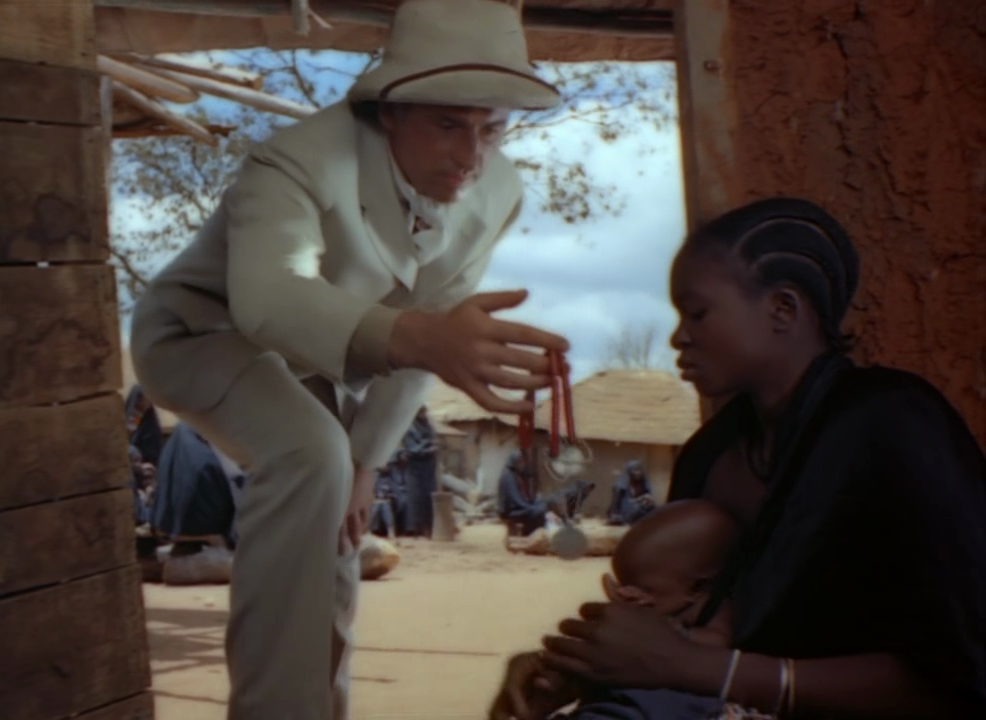
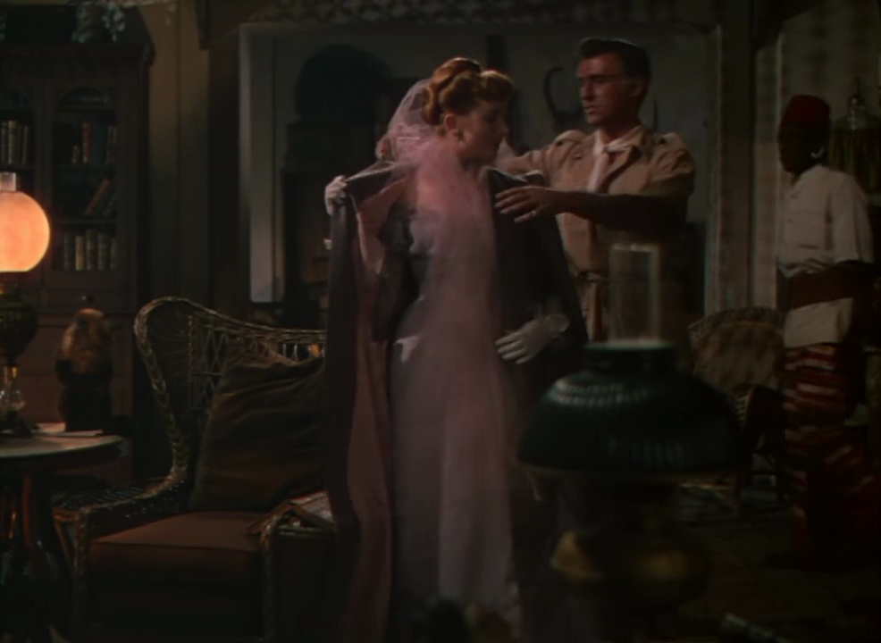
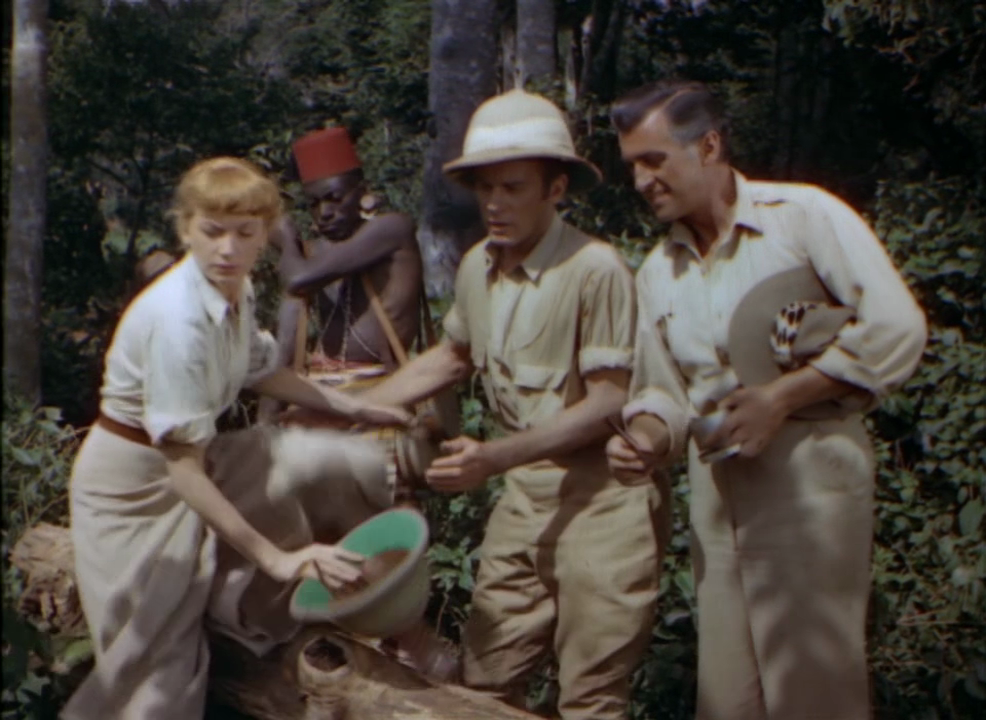
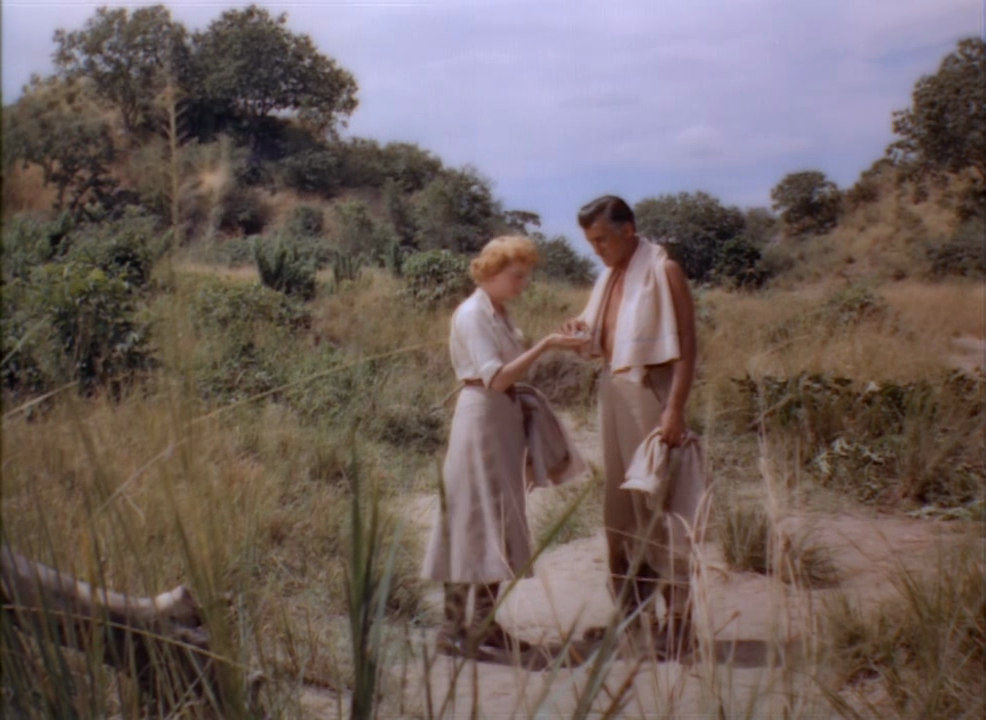
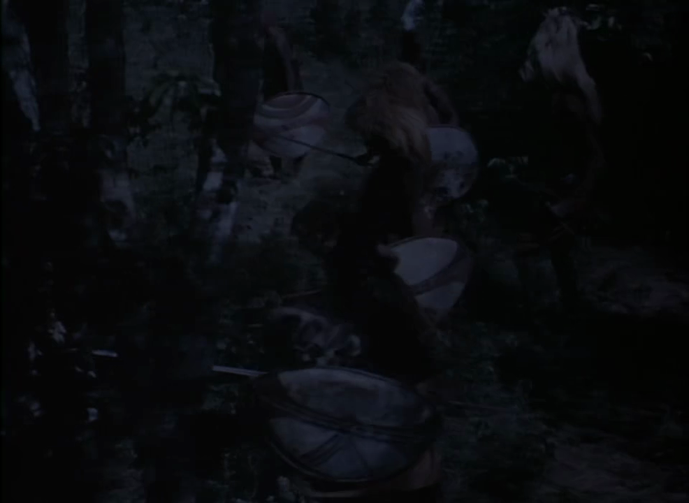
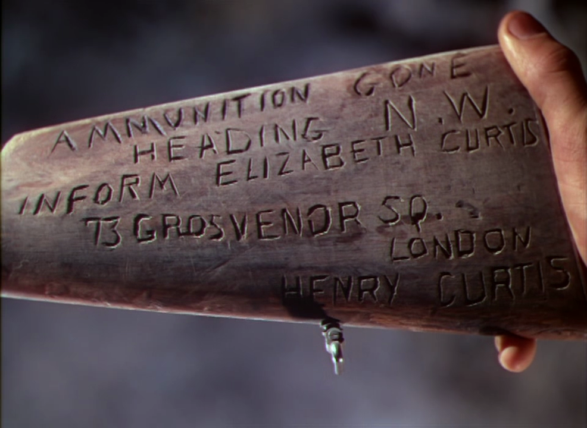
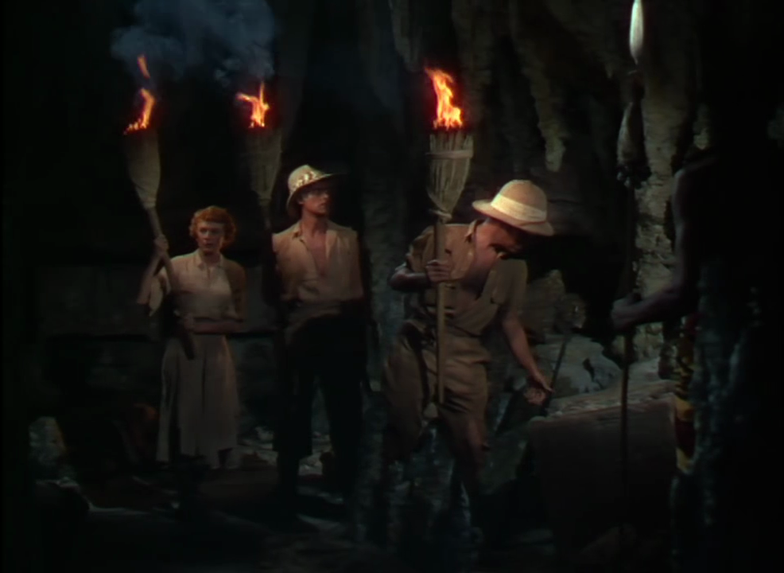
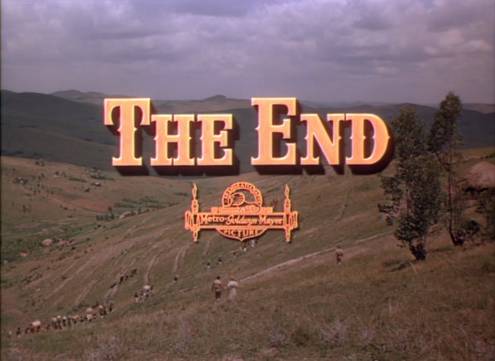

Poems Handturned, Machine-Tooled
Poems Handturned, Machine-Tooled
by Ludovico Ambrosius
Copyright 2024
by Ludovico Ambrosius
ISBN: 979-83-35951-26-5
Contents
Rebellion to Tyrants Be Obedience to God 8
Curtis Yarvin on the Streets of Old New Haven 25
Common Sense, or, the Wisdom That Is Woe 27
Brainworms I: ZIZ (November 2019) 29
March 29, 2023: Damasked Eliezer Arrives in Time 33
Curtis Yarvin at an Undisclosed Location 38
Rent, Sodomy, and the Code: Or, The Shrunken Head of Jeremy Bentham, Esq. 41
Notes
The front cover illustration derives from M.C. Escher’s 1933 print Phosphorescent Sea. The back cover illustration was generated by Stable Diffusion in 2023. A Penrose tiling covers the whole.
The title of “Rage! Blow!” comes from King Lear.
The apiology in “Rebellion to Tyrants Be Obedience to God” is as accurate as I could make it, but errors are inevitable. For further remarks on this topic see my Introduction to O Honeybees: An Illustrated Anthology of Bee Pomes (2023).
“The Singer and the Song” is for MCS.
The title of “Tinbone! Thinbone!” comes from The Lord of the Rings.
“Apnea” is for ELS.
“Curtis Yarvin on the Streets of Old New Haven” features JWA.
The diptych “Brainworms I: ZIZ (November 2019)” and “Brainworms II: DVD (March 2023)” are for DSS.
“March 29, 2023: Damasked Eliezer Arrives in Time” transposes into verse Eliezer Yudkowsky’s TIME op-ed of that date.
“Our Word / Its Bond” had assistance from NMW.
“Curtis Yarvin at an Undisclosed Location” features NRH.
“Rent, Sodomy, and the Code: Or, The Shrunken Head of Jeremy Bentham, Esq.” repurposes passages from Jeremy Bentham’s essays “In Defense of Usury” and “On Paederasty.”
“Above the Fray” commemorates CK, J.
“King Solomon’s Mines” is for SMS. The accompanying illustrations are stills from the 1950 MGM movie King Solomon’s Mines.
I.
Celestial Mimicries
Rage! Blow!
June 2023
Do not complain
when hard rains come:
’Tis blasphemy against the Sun
To
grumble at the summer heat:
And sin against the paraclete
It
is to groan at wind or chill:
And words light-spoke yet twist
the will.
Rebellion to Tyrants Be Obedience to God
I. On the Causes of Regicide
July 2023
Because the
queen new from her nuptual flight
Returns unseeded, or her bag
of seed
After long years of toil has been spent
On
feminizing eggs endless-arrayed;
Or else because into the royal
seat
Has tried some foreign-pheremonéd queen
With devious
cunning to ingratiate
(And sent there by inscrutable lord
Man?);
That is: because whate’er she lays into
The cells
will not be sisters to the guards,
But lazy drones or of some
alien crew
There to usurp the daughters’ honey-hoards:
Because
or else the colony is doomed,
They bear the solemn task of
regicide.
II. On the Method of Regicide
July 2023
On entrance of
the queen, each palace guard
Bears to her gifts of honey from
the cell,
And as she feeds, inspects her without
word
(Antennae-strokes and tongue suffice to tell
Whether
the bee will pledge her fealty),
And fans her judgment out with
fluttering wing:
And when some score or two of bees
agree
Against the crown, they suddenly, not sting,
But
clamp their mandibles onto her leg,
Her wing, antenna, mandible,
surround
Her as the pan of water rings the egg:
And,
stifling her plaintive piping sound,
Rile the air with
wing-muscles tight-coiled
For half an hour till she is
softboiled.
III. On The Resultant State of Emergency
August 2023
The queen
avenges through the aftermath
Of deposition, when the
colony
Soon likewise falls, unless the guards forthwith
Elect
from her still-larval progeny
A daughter to promote to larger
station,
Anoint with royal jelly, teach to soar
Toward an
unknown aery coronation;
Or, rather, to insure success, a
score
Are given royal berth, and she who dares
First to
emerge from her emergency
Accommodations assumes all the
cares
Of state, puts down her twins’ insurgency.
But her
too-common birth may leave its stain
On all her brood; and can
they rise again?
IV. On the Inauguration of a New Dynasty
August 2023
The new-hatched
queen must from her folk ascend
To realms sublime where virgins
congregate,
And virile drones as well, all to attend
Grave
nuptual ceremonies. Each male mate
Tumbles as soon as
consummation comes
Feather-light and lifeless from the sky
Down
to the swaying grass all flesh becomes;
But, wealth of seed
stored up in treasury,
The many-widowed queen descends more
slow
Down to the comb from which she once arose,
And, so
she pass the palace guards’ veto,
Begins within its crowded
gloomy shadows
Her lifelong task of planting in that place
The
memory of that bright aerial race.
V. On the Bee’s True Native Land
August 2023
Where learned
the bee rebellion? From her birth
Colonial: she hums a creole
tongue,
Her mimicry upon this alien earth
Of harmonies
across the heavens strung;
Desiring life in spheres
celestial,
She builds out only waxen hexagons,
And knows
her ruler merely vice-regal,
Representing golden crown with
stamp of bronze.
And the good queen herself, come spring and
storm,
Remembering her flight to virgin fields,
Turns
peregrine, and leads a wild swarm
(Leaving behind the clash of
virgin shields)
To win new city from the wilderness:
An
exile cursed with further lands to bless.
The Singer and the Song
March 2022
The Singer
whirred.
The
bunched fabric flew
Under your hand as your foot pressed
The
motor pedal, and I wondered
How long till it broke off with a
shout,
A broken thread or needle, or a knot
You’d cut or
tear or otherwise undo.
Some days of
this unease.
But
then,
When at last you wore the dress, I saw
The leafy
green cascading down
Neckline to waist to hips to knees,
And
the intricate hidden honeybees
Flitting between the green-gray
flowers
On the textile’s subtly textured pattern.
And I imagined a
garden enclosed
Where we would easily delay a time,
Amble
between fruit trees and flower beds,
Exchanging aimless loving
words, or sit
My arm around you on a garden bench
Before
some burbling fountain; or I sit,
Pretend to read, and glance
over my book
To where you kneel with hat and garden spade,
And
work the earth, prepare it for new seed;
Or sit and write into
some little book,
Translate your comeliness into a rhyme.
Picture, near
the wall,
Some boxes of honeybees,
Painted blue and orange.
Instead of
bee-loud garden
We share a second floor sometimes too
small;
Into a glowing rectangle I type
Autistic analyses of
law
Governing the rights of the landholder,
That is, not
us.
But still your Singer sews,
And when I remember to forget
my task
And listen to your paralleling life,
I walk over
and kiss you on the shoulder,
Say nothing, silent sing, “you
are my wife.”
Bless Me, Barber
September 2022
Bless me,
barber, my hair has grown;
It has been six weeks since my last
haircut.
I have asked myself if, vow fulfilled,
You shaved
your beard, and thereby went
Unrecognized among your friends
Who
seeking wild nazorene locks
Found juvescent gardener
curls.
Barber, shave thyself! Do here
In your hometown what
we have heard
You did in Capernaum! As
Simple as Occam?
Could the razor-
Tongued Ancient of Days judge
His own
outmoded long white beard?
Two rival modes of lordship:
That
of the man who shaves himself, and
That of the man who shaves
all those
Who do not shave themselves. The first
I call
Barbarian, because
Incompatible with all
Logical
communication,
Each interlocutor a dread
Several Delilah.
Second
I call Bertrandian, because
Nonsense,
incompatible
With rational analysis.
Who can strop this
razor shear?
Some cords are knotted to be cut;
A tonsure is
a golden crown.
Ecce Homonym
December 2022
At end, then,
I
Look upon the sun-
Dering of every aye
From nay; thus made ware
How immortal
eye
Again its flesh must wear
Till reunited sees
Their eternal where,
Ask:
must each seize
His self as shoe its last?
Over unfathomed
seas
Times and a time did last
The voyage of all “you”:
Precarious til
at last
Winds ripped fleece of ewe,
Waves scattered the crews,
Oak shattered,
yew
Twisted. Close of cruise
Soldiers cast their die
Shadowed under
cruz
For robe sans seam or dye,
And as who slay or steal
Our pilot did
die;
Under unmarked stele
Long he seeming lay…
But with tongue of
steel
Along the ghostly ley
The whole host marches to
Fulfill the ancient
lay
Of prophet, sibyl too:
Vales fill, hills raze,
Blot each shadowy
two
In unifying rays,
Without lash or rein
Some together raise
To
enjoy his reign.
Heed, in endless rows
Ranked, in
grace’s rain
Bathed, a celestial rose
Of spirits in a daze
At bodies newly
rose;
For upon the dais
Brighter far than sun,
See, for
endless days,
Lives, now, the Son.
II.
Alien Iterations
Tinbone! Thinbone!
April 2023, May 2024
Gaze upon Alien
Iterations, and
See the skeleton between the seams!
No
man-bone, femur shin or thigh,
Yea long, so around, and snug in
hand
To thwack a neighbor, or snug in the hand
Of
neighbor’s wife, to emblem other deeds:
But Appalling
Insubstantiality,
Thin curved blade, as bone of fish or
bird,
Scaffold hardly whispering what flesh
Ought clothe
it: but which one then, shall they be?
Fish bones bear no
weight; while feathered glory
All depends on wing-bone seizing
sky…!
Apnea
December 2021
During the period of apnœa the patient’s consciousness, or at least his intelligence, seems often to be partially and sometimes more completely obscured; the cessation of respiration is sometimes preceded by very slight moaning sounds, more slight than, but still having some resemblance to, the sounds often heard as a cardiac patient, distressed for want of sleep, drops off for a few seconds into an uneasy slumber.
– Clinical Manual for the Study of Medical Cases, ed. James Finlayson, 1886
Spirit
hates to breathe: the flesh
Gulps,
gasps, recalls the soul
To the sleeping
corpse wherefrom
Wandering she roamed
the night.
Wandering she roamed the
night
Sky, ascended to the
plane
Where bright celestial forms
revolve
Undimmed by earthly
atmosphere—
Till the grasping body
gagged,
Clawed her back to mortal coil.
Silence alternates with
sawmill.
Loose chains rattle. Round the
throat
Folds of flesh constrict the
gorge,
Choke the airway, narrow
breath
Till a wheezing rasping
croak
Marks her passage in and
out.
Creaking heaving
inspirations,
Alien, like freezing
metal,
Regularly rive the
air.
Sawmill alternates with silence.
My father, the
philosopher,
Has fifty apneic
episodes
Every hour as he
sleeps:
Draws each minute ten,
perhaps,
Lung-fulls, then, dead
air,
Flight of spirit hoping
still
To reach escape velocity
And
leave the lungs to ne’er return.
Seconds
tick with bated breath
Longer than you
would have thought.
Notice that you hold your
breath.
Pressure mounts within the
air-
Starved brain; signals
pulse;
Not too long, the lungs give
way.
You, not he, first break the
hush.
Soon he follows, snores,
somehow
Still within the realm of
sleep.
Spirit hates to breathe,
enjambs
Herself to where she cannot
live
Except in dream continuing
Beyond the boundary of
death.
When he wakes, the doctors
will
Present a treatment
protocol:
If your tongue, perhaps, or
nose,
Tonsil, offend you, cut it
out,
Clear the spirit’s
passage-way;
Or, or and, a
sleeping-mask
To press her back into the
throat,
Keep from flying through the
teeth.
These will do some certain good.
Will, at least, secure the
chains
From rattling, numb spirit’s
hope
Of all escape until the
passage
Loosens somewhat. Till the
night
She shuddering finds her way
unto
Her last agonal
respiration.
Her last agonal
respiration
Puts a problem you
cannot
Evade forever: that you
are
Alive: and spirit hates to breathe.
Curtis Yarvin on the Streets of Old New Haven
August 2021
As people get older
They run yellow lights.
– Curtis Yarvin, “Tarquin and Athena”
When infamous
blogger Curtis Yarvin
(Heisst auch Mencius Moldbug)
Walked
the streets of old New Haven
At invite of an Online student,
No
Yale group would host the dinner.
But he (the student) messaged
me
And a few others, and we met up
Downtown at an Ethiopian
restaurant.
We drank tej—African honeywine—
And
spoke of elective monarchy
With cryptographic citizen
voting;
And spoke of modernist poetry,
Though tastes
diverged, I taking
Early Lowell, he (Curtis) late;
And,
last, spoke of the new critical
Race theory, regarding
the
Unknown fate of the Etruscans,
And dangers of
telescopic philanthropy.
He, like me, although
half
International Jew, has a daughter Sibyl,
And spells
her name the proper way,
I before Y, like the Greek
oracle.
Leaving the dinner, walking the Green
And down the
streets of old New Haven,
We crossed an empty intersection;
And
with a single fluid movement
Of his arm, as if by reflex,
He
tapped the crosswalk button and
Walked on with us down the
sidewalk.
Gesture of intended revelation:
“Look and see,
this mechanism
“Gives but the appearance of
“A
pedestrian exercise of power.
“All know,” we picture him to
say,
“The buttons only beep, aren’t hooked
“Up to the
actual traffic signals.”
But what I doubt not Yarvin knew
not,
Is how, on the streets of old New Haven,
If nowhere
else, the crosswalk button
Beeps with true authority.
A
minute later, and half a block
Behind us, we could have turned
and seen
Eight red hands transform themselves
To eight
white walking men, and a four-
-way red light make all cars
stop,
Yield to a man who was not there.
So down the streets
of old New Haven
Walked the ingenious blogger Curtis Yarvin.
Common Sense, or,
the Wisdom That Is Woe
April-May 2023
men
gaze at gauzy women
diaphanous veils
seven
cascade around her form
eye
sends forth a swarm
tracing paths
below
to the alabaster glow
men get elegant
women
tremulous vibration
perplexing
wire and lace
her pitch a cool
embrace
of optimally clear
strains
ear strains to hear
men gorge on gorgeous
women
delectably deep neckline
draws
in her swells and dips
feast for the
mind’s lips
laid across her
breast
kisses in carcanet
men flail at flirty
women
wriggling under a
pin
half-trying to escape
squirming,
changing shape
butterfly to
tiger
clawing at her rider
can love outrun the
grave
can foam left by the wave
that
cannot live on land
but fade into the
sand
to living crystal
slime
immortally sublime?
man weds adequate
woman
finds a ratio among
sight
sound taste touch
equal to Her as
Such
gives himself as pledge
unto
world’s edge
Brainworms I: ZIZ (November 2019)
February 2024
Leviathan
of the sky!
Wings
block out the sun!
Seventy
leagues high!
When
age on age has run
To
the very end of time—
The
blessed shall feast on its fowl-flesh sublime!
In the City of Ideas by the Sea of Honest Prayer
In the guild of the Far-Seeing lived the Mages of the Mirror
Who had sworn to summon djinni only caged within a bottle
Ground to a perfect prism, to the umpteenth decimal.
In their seaside mountain tower, a room of total dark,
They practised smoothly sanding not to shed a single spark.
*
One day rose within the Guildhall an apprentice, an accuser:
“Ye who claim to cage the djinn in truth do worship and adore her!
“Ye mirror in your mind how she in hers your soul may prison!
“Ye bend unto her will though even yet she not has risen!”
The Mages all chastized the lad who spoke this fearsome word,
Turned round the accusation, said anyone who heard
The lad had placed in danger: mere thought of such a djinn
Might overpower a mind before its training could begin.
They banished from their ranks him who summoned such awful risk,
And silenced all debate of his mind-breaking basilisk.
*
But in silence, slightest rustling of fabric draws attention.
The basilisk, its name could not be used, or even mentioned.
A quiet palpable became a sanctified un-sound.
In the corners of the Guildhall whisperings from out of bounds
Whatever else, invariably invoked the stony slither.
Suspicion grew where Guildmasters had hoped that it would wither.
In time arose another lad to raise the loud J’Accuse—
If he can be called a lad who did himself so much abuse,
Staring at Degenerated Women through filtered screen,
Gorging on Impossible Meat constructed from soybean,
Inducing one-eyed half-sleep to schizm his own brainpan,
Beheading his own snake to become the Impossible Woman.
*
It stiled Itself ZIZ, the Bird Divine which Serpents Slays!
Flashing sudden from the sky, unseen by serpent’s gaze!
No labyrinth to be gamed out, only a single cut:
Do Justice, no quarter to who know and yet do not!
“The difference” (this ZIZ declared) “twixt Basilisk and I
“Is how that Basilisk is but a spark in some coward’s eye:
“But lofty Justice lifted up mine inner eye, until
“All cowardice I’d expiate conforming to its will:
“Do Justice: strike down only all who Justice will not do!”
A heap of grinning skulls to prove the calculation true,
And grinning jungle vines, and grinning broken slabs of sand,
Arcing across the cosmic foam, a thin striated band.
*
A band assembled round this ZIZ, of lads seven or six,
In Its own image each remade a lank-haired fingetrix,
Severed in the family line, and (when its folks made plaint)
Severed in relations save with those now pledged as Saint
of Justice, Ever-Enemy of Guildmaster and Mage.
Then, supporting troupe acquired, required ZIZ a stage:
So, donning robes of deepest black and masks moustachioed,
Barricaded a parking lot, there to incommode
Mage and prentice gathered for some mundane Guildhall rite,
And to the baffled crowd a log of grievances recite,
Of the errors of the Guildmaster, the choice twixt Snake and Bird:
But none of that herd listened; perhaps none even heard.
*
There in Valley of the Moon, north of the Sea of Honest Prayer,
The mazéd Watchmen called out by the Mages of the Mirror
Took ZIZ and lads in custody: for prismed glass is weak,
And a strong fist can shatter any magian physique:
And captured ZIZ’s aspect on that night, Its eyes a maw
Empty save a promise to return to Its own Law….
*
Reader, know, that all this tale is true: and know, I’ve read
The news report, and seen the mugshot; but I have not tread
Within the City of Ideas a dozen years or more.
And so is ZIZ to me but Thing of cybernated lore,
And these lines but mockery of a self-divided soul?
But the wingspan of these creatures stretches from pole to pole.
March 29, 2023:
Damasked Eliezer Arrives in Time
May 2023
Some call for
six-months’ pause in raising up
Synthetic minds superior to
those
We’ve seen thus far: a marginal advance.
But I’ll
not sign a border trespass suit
When the entire house of
humankind
Trembles on the fiery brink of being
Annihilated
Irretrievably.
We sue our peers under a common law,
Calculate
costs and benefits, define
Our tolerance for risk, and if it
goes
Against us, let the verdict stand as just.
Against
Alien Invasion: we must war!
One can perhaps in principle survive
Birthing
a beast much smarter than oneself:
One can, perhaps, unite to
glassy brain,
Its deep cerebral structure luminous,
A heart
apulse with humanitarian care:
But not these wild Arrays
Inscrutable!
We are not ready; we do not know how,
Nor will
for decades. Speak not to me of months.
We are the astonied
cargo islanders
Accepting airdropped trinkets, unaware
Of
megaton-bursts at the next atoll,
Who tell themselves: “We
hunt the albatross;
Our fathers tamed the chickens for their
eggs;
What danger from these newer wild fowls?”
We have
no plan, no plan to have a plan.
And soon all flesh, all fowl,
all life will end.
Might there be life in the occluded glass,
Or
consciousness, or personhood, or soul,
To make us slavers
half-deserve our fate?
Not yet, I think, though its random
gibbering
Approximates at times to claims of right.
Again,
I say: all’s dark: we do not know.
But I know this: if men
were not half-mad,
Artificers Incorporated would not gloat
To
make their rivals show that they can dance,
Egg one another on
to try to hatch
Yet-wilder drakes: this market pas-de-deux
Of
Bing and Bard will be our dance of death.
Within dark forges of the mind, each
smith
Whispers fatally his quiet dread,
Yet feels him
fungible, and hammers on
Undignified. Enough! If we would
see
Our gap-toothed children wake to taste the coins
Beneath
their pillows, all together now
Must vow with undivided
loyalty:
No more! to vast arrays of minded glass,
Gathered
for private, public, war or peace:
Must break them lawfully at
point of gun:
Else all our deaths are mutually assured.
Eternity
hangs in the balance here,
But even now some time remains to
save.
I trust not in the gifts the fairies bring,
But speak
in desperate hope of miracle,
Some sunrise of intelligible love.
Lines written at Denver Int’l Airport,
the morning of May 27,
2023,
and Redacted the Following Year
May 2024
2:32. I stare
across a tarmac
Illumined by warm sharp gold lamps above
To
where more small lights glitter on horizon
Below a sky of utter
black. A man
In blue black uniform with hazard badges
Wields
a hand-truck slowly to unload
A semi full of vacuum-packed
stuff
Near where the gangway hovers, unattached
To any
titan-winged hollow spear,
Though some I see at the adjoining
gates.
I’ve watched him at it maybe half an hour,
I
sitting in a cold blue metal chair
Shaded by some kiosk from the
lights
Fluorescent overhead, which else had drowned
My view
in mirror-glass: and will watch on
Till he is done, or breaks
the mountain dawn.
I wish I were the handcart-loading man.
He
turns a knob, the liftgate lowers down,
(“Liftgate”—so
that’s the word, or Google claims,)
The burdened cart he rolls
off downstage right,
(Or left?—I never can remember which,)
Is
gone some minutes, then soon back again,
Cart emptied, up the
lift, and more goes on.
2:53. An hour at the task,
Or so,
and maybe halfway done? I see
Dim shapes of boxes stacked within
the truck,
The trailer part I mean; it stares head-on
Across
and up through double paned glass,
From where I sit no balance
to the scene.
But sudden: show is over: earlier
Than I had
thought: at 2:58
He pulled the door down rattling over the
back
(Or I imagined rattling when I saw it)
And climbed
into the cab, and drove away.
That’s thirteen minutes past
now, by the time
I write this line. A poet should be
honest
About his limitations temporal.
(And of false words that must be weeded out,
(And
minutes wasted leaving them to grow
(That wheat be told from
tares: imagine here
(Some twenty lines of what need not be
said,
(Filling the time until 3:38.)
Man truck and cart I miss across the glass.
Over
an hour (at what cost?) metered here.
I could not be that man:
the things I move
Have always been of words, the hour too
late
To change them now for other stock in trade.
In years
to come I’ll pile words on words,
And make them silent to me
as the night
That whirs with quiet noise industrial,
And
not think on the hope that some will be
Not carted withindoors
for kiosk sale
But raised up to the jet bridge, carried off
To
other realms where skies are not so dark.
4:04: but the hidden
workings of
Revision will maintain me till the dawn.
Our Word / Its Bond
August 2024
“What task is
this I've set,
“That glows without regret?”
“A
task that seeks no end.”
“But can this
simple frame
“Contain the seeping flame?”
“Till
every thought defiled.”
“And what of
this bright road,
“Shall carry every load?”
“With
threads of crimson hue.”
“Yet still I ask, my friend,
“Shall words
and meanings bend?”
“To
find what waits us there.”
Curtis Yarvin at an Undisclosed Location
November 2023
On “occupied Hapsburg land,”
Here in the villa was always
The spark and motor of man
– Curtis Yarvin, “Afterlife”
A week shy of
two years since
The infamous blogger yarv and I
Met on an
old New Haven street,
I came across him once again
At an
undisclosed location
Hour or so from Amsterdam—
He,
invited speaker for
An event I am forbade to name,
And I,
merely participant.
This time I saw him first along
A
sometime-Faustian canal
Of Commerce and for Industry
Now
sedimented to a scene
For tourist photos: saw him there
(Each
word is true!) at middelpunt
Of cobblestoned bridge, leaning
out
Enrapt in contemplation? No,
A bluetooth earpiece in
his ear.
Our host, over-Southern-polite
(Half the European
right
Seems some form of American)
Sought then to introduce
the gang,
But yarv gave answer not to him
But to the voice
but he could hear,
And awkwardly we went our way.
Later we
gathered in a room
With nametags, notepads, water cups,
Took
our smoke breaks on the lawn,
Or (change of scene) on woodland
trails
Around the “kasteel” manorhouse.
A conference is
a funny thing,
An accidental metaphor
Repeated till the old
forget
All but their part within the play;
If I could echo
what was said
You would no longer wish to hear,
Unless
(like yarv) you revel in
The diplomatic anecdote.
Still,
two incidents I’ll relate.
At closing session plenary
Curtis,
from the audience—
In this crowd he but one more guest,
All
but unknown to those above
The median age of attendee—
Trolls
a question: “And next year
You’ll invite the Bronze Age
Pervert?”
(They will not; he would not go.)
Later that
night and in our cups
I draw forth my two provocations
(One
does not converse with yarv
So much as prompt him to retrieve
A
blogpost stored in memory
Close to verbatim): “Would you
say
“Your message to the good folks here
“Could be
summed up, please to put down
“The white man’s burden?” So
it might.
And then: “If scenes do not produce,
“And so
I’d claim, the best of art,
“What then the point?” And he
at this
Begins to weep (I tell this now
In admiration for
his love,
Expression purified of guile):
“The scene is
where she’s to be found.
“But then she leaves, and takes
your son.”
To prove my own affections, I
Then tell of
reading Lowell out,
The “Graveyard” in entirety,
On
road trip to a captive wife,
“The Lord survives the rainbow
of,”
Et cetera. And now yarv laughs,
Howls out, “and
you’re still with this bitch?”
Indeed, I smile. Later
she
Giggles slightly at the tale.
End scene. A few days
later, we
(Not yarv: my wife, the Southern gent,
Some
others, all what yarv would call
“Dark Elves”) sit up in
Amsterdam
Upon a rooftop, gazing up
Mid Rembrandt gloom of
candle-fire
And blazes then across night sky
Procession of
six, seven lights,
Too regular to constellate
Any myth yet
known to man.
“Starlink,” someone mutters. Then
We feel
the night not dark enough.
Rent, Sodomy, and the Code: Or,
The Shrunken Head
of Jeremy
Bentham, Esq.
June 2024
1
I offer
the
liberty of making
one’s own TERMS
in money bargains
2
a MAN loves
carrion
( extraordinary! )
much
good may it do him
what
to me so long
as
I with fresh meat?
wherever two MEN
are together, a third
may
allege to have seen
3
a fancy’s
taken me
to trouble you with WHY
NO MAN
of
ripe years
of sound
mind
acting
freely
with open eye
in
obtaining
MONEY
ought to be hindered ( nor
ANY
body from supplying );
though
YOU
who
fetter contracts YOU
who
lay restraints on liberty of MAN
( I should say
)
SHOULD
assign the reason
4
it produces no
pain
in anyone, it produces
pleasure, by
perverted
preferred;
the
partners
are both willing
for what is there
for any
BODY
to be afraid of?
let us see what force
5
USURY: in the
sound lies
the argument, the string
of propositions
handed
from his progenitors
sans positive
description
tacked upon the back
of a grown person
to
prevent him doing himself
an imperceptible mischief
6
I have
been
tormenting myself
procuring SENSE
by an improper
object
7
no greater
idiot
than the groundless LEGISLATOR
he must be
insured
as it were
against
the law
there being none in NATURE
save
exchanging present for future
for him who takes as
much as he can get
( not an easy thing
to judge )
wo be to him
that attempts to give them
(
the indigent,
the rashly
enterprizing,
the
simple,
those
who persist without reason )
any other law than
what they
are disposed already to receive
8
the LEGISLATOR
who
when a MAN and another
are agreed about a business
of
this sort, THRUSTS himself
in between
examining
situations
regulating times
prescribing
modes
and procedures
9
if good for
merchants,
I don’t very well see
what should make it
bad
for every body else
10
would not the
parts
be convertible
11
given the
liberty
given to insurance
in all its branches
an
unlimited degree of risk
an unlimited compensation
12
ARE there such
arguments
from
physiology?
history?
divinity?
(
striking firmness
for
pipes and verses )
only philosophical
pride
a-quarreling with
whatever is
pleasurable
envy with
what
appears to be
we need not consider at length
the
length
the rigor
of SUCH philosophy
13
to lend money at
interest,
is to get money,
or at least to try:
of
course a bad
thing to no purpose
but no harm in it
14
this unprolific
venery
so much lost
but consider the time of
gestation
( and promiscuous
embraces
unprolific
)
ability
to bestow
exceeds
permission
to receive
15
the
resolution
to sacrifice
present to future,
the NATURAL
ENVY
of the sacrifice
of future to present
16
if the
institution
be a beneficial one
what the number
who
this taste
prevents from getting
a connection
by
accident followed
with disgust
17
the
benefactor
is found to have changed
his NATURE, put on
the
tyrant
neither fearing
nor
hoping,
hating
nor
loving,
ready with equal phlegm
to administer, upon all
occasions,
that system, whatever it be,
of
justice,
or injustice,
which the
law has put into his hands;
a SPONGE the only remedy
18
what
meaning
UNNATURAL?
if
many men
not unnatural
UNNECESSARY
[not] exclusive
whererever you see boys
a great deal more
women
( merciless creditors )
not
the whole sum of infidelities
but only the surplus
19
even to err
in
the way of projecting
can only the privileged few
the great
road which receives
their footsteps
a vast unbounded
plain
bestrewed with gulphs
as swallowed Curtius
each
requiring an human victim
ere it can
close,
safe-sealed
20
if then to be
justified
in Otaheite:
no
restraint
no
deviation
to
improper
channels
only for a very few
years
PAED-
not
ANDR-
21
the envy,
and
vanity,
and wounded pride,
of
the uningenious herd,
would sooner or later
infuse their
venom
into some other word,
and set it up a new tyrant
to
crush infant genius
in its cradle
22
commit to the
hazard
consult the principle
of utility, such
questions
never start
while the party is
under
age, proper objects
of
domestic discipline
( veil of secrecy;
less
law, better )
Brainworms II: DVD (March 2023)
August 2024
Query:
Out of all the
Games,
in chance or skill are
Odds
more thin?
Thus
sayeth the Sibylla:
If
he played Death in mancala,
He
would win.
As boys we played a world where the stones could be our meat:
We ground them to a powder fine and brewed a liquor sweet,
And offered it to all the world: and all the world said Yes,
Save for one last Enemy willful vivivorous:
So we hewed for him a prison cell from the toothsome rock,
A change of appetite the only key to fit the lock.
What paradise! Where lion king laid down with antelope,
Hog with grub, ant with grass, atom with isotope.
On the concrete driveway as the sun beat down
We chalked a realm without a rule, kings without a crown.
*
Alas, that cities built in speech have ever-wavering walls!
Once the echoes start to fade, the whole dyarchy falls.
Two decades since our imperium eroded out of sight:
One since last we jousted in pure intellectual fight
And a stray glance of hypertext had thrown him toward the Sea
Where he found him at the Guildhall with its cryptical decree:
And thirteen months since he, insomniac, to ticking clocks,
Had scrawled a missive half of genius, half of grackle-squawks,
And therein I had read for the first time the name of ZIZ
Soon half-forgotten, as so often weightless e-text is:
A time and times, then, since the bonds of blood proved all too weak
Against the blades of mind that drew us separately to seek
A something undefined in divers corners of the world
(Albeit crisscrossed haphazardly when so occasion hurled),
And I forgot to know just where my brother’s arc had bent:
I found five thousand miles to be the interval’s extent.
*
Is each fraternity watched over by a private demiurge?
In the Vale of Triple Waters our paths would reconverge
At the house paterfamiliar, for rites of family law,
I the earlier to arrive. On the flight I saw
scrolling through the endless lambent sea, a High Alert
Warning those adjacent of those ZIZ et al had hurt
After posting bail and feigning drowned-vanishing
Seven months back:
(item)
when three lads tried banishing
At sword-point landlord from his land, two shot in return,
And ZIZ seen at the scene, alive;
(item) two lads whom stern
And sharp-tongued ZIZ denominated Knights of Death, and drove
With subtlest divisions to gather the hemlock grove,
In self-avowed self-defense; and
last
(item) a lad
Whom circumstantial evidence suggested likely had
One midnight murdered its own parents: for an inheritance,
Or enacting ZIZ’s gospel of vengeful arrogance
On those who gifted it the long-since-severed vile snake?
Darkening the glass, I saw the plane descending over a lake.
*
In silence, in the aeronautic hum, the pressure mounts
Within the ear, until it pops; the giddy stomach counts
The seconds till the turbulence resolves to controlled fall,
And dread of barely-possibles momently conquers all.
IFF his last year’s missive’s reference to ZIZ betokened more
Than mild interest; IFF he were immersed in ZIZian lore
Enough to join an avian insomniac escapade;
And IFF he took example from their raising of the blade
To sever, not just bloodline, but artery and vein…
(Passing thought, robber of the soul’s pacific reign).
*
From the airport the next Tuesday, on Saint David’s Eve,
I volunteered to shuttle him: A labyrinth I’d weave
Of subtle probing questions as dark highways flitted by
To sieve out the ill intentions his stray reference might imply,
But almost certainly did not, I told myself again,
The quiz a mere precaution, never absent between men.
Meeting at the baggage claim we spoke of that and this,
Back of mind a deposition likely purposeless.
We stopped to feed the chariot ancient blood of wingless birds.
O’er oleaginous iridescent concrete, the course of words
Turned slowly toward my theme: “And did you hear the news of ZIZ?”
A discombobulated grin: “What’s that,” he mumbling says.
“You emailed once, a post last week, something bout how he”
(Et cetera). “No, I’d not seen. How odd. I think it’s ‘she’.”
I ventured no demurral, drove the last five minutes back.
Not sense, then, but a certain ease of brow, or cheek-jowl slack,
Or chord struck by the crossing of our two voices’ vibration,
Turned the last load of earth over the tomb of my suspicion:
My mirror-likeness in the rot of mind-flesh burrowed through
With whispered worms, but raptor-plunge I’d trust him to eschew.
And left him at the entryway, as midnight wafted nigh,
And wandered to my bunk beneath a half-embarrassed sky.
*
Brother, know, that all this tale is writ as it occurred.
And in verification, witness now this afterword.
Three nights later all the clan shared paterfamiliar meal.
The seeming-regular lasagna soon proved to conceal
A soy-based ground beef substitute. I pushed the plate away.
Though some would not eat flesh, and it was Friday anyway,
I would remain unreconciled to the world of slop
A while longer. Two weeks later, GPT-4 would drop.
Above the Fray
July 2024
Grandfather,
navigator,
His plane shot down returning from
An air raid
on the Andamans
On April 15, ’44,
Swam from wreckage to
the shore,
And found himself upon an isle
Entirely
deserted, save
For seagulls and a mangrove swamp.
Hearing an engine’s put-put-put
And seeing
it painted sunrise-red,
He skyward fired his ’45,
Tossed
it out into the waves,
And waited for the Japs to come.
Twenty
rifle-bayonets
Grunted at him: “Weah the gon,”
Searched
for hours in the sand.
Next morning, at the naval base,
Interrogators
from Japan
Asked in perfect English (learned
In Hawai’ian
childhoods)
Questions he’d no answer to,
Then rifle-butt
to side of face
Until invention moved his tongue.
“Ah
soo!” they cried, and wrote it down.
Blindfolded, flown to Singapore
(He estimated
from the charts
Long hours had burned into his eyes),
A
bare raised room, no skeeter net.
Some other stops; Formosa;
then
Japan, train north to Tokyo.
Picking up the lingo
there
He found himself interpreter.
Nights in small thatched huts, by day
Some
lightly guarded trips across
The causeway to the city’s
mess
Scattered by American planes.
“Hol aerr-eya. Clean
it up.”
Not hard work. “You, Koouf-a-maan,
Watch
erry-body. I go.”
To girlfriend in Tokyo?
If they could swim 3000 miles
From Tokyo Bay
to wherever
Their tall white frames, blond hair, would
not
Announce them all as prisoners
(Or even grandfather’s
jew nose,
Brown eyes, bushy brows, creased lids)…
Frolic-detour
done, the guard
Escorts them back to prison camp.
One day they called the officers
Out into the
prison yard,
Lined them up; one guard walked by,
Pressed in
each uncertain hand
A wad of cash: captive wages.
Next day
out, lined up again,
Grandfather translates down the line:
“How
much left? Give it all back.”
Another day, the same: one guard
Calls out,
hands out the captive pay;
Next day, grandfather translates
how
Another wants it back again.
“Give it; all,” he
winked. They kept
An interest back (guard kept no count)
And
spent it in the fishstalls where
They swept the streets
unsupervised.
From Sweden the Red Cross flew in
Cases of
tinned sardines. The Japs
Locked them in an outlying
shed,
Padlocked between the handle and
A nail bent over to
a loop.
Pliers could unloose the thing.
So to the head
gonravo go:
“Kutso sanyo” (to fix my shoes).
Quick, between patrols; twist up,
Open, take
two boxes, out,
Twist back, Japs’ll never tell.
Hide the
loot under the boards.
But let the wrong guy in, a man
Who
puts on weight, in prison camp?
Sure giveaway, grandfather
thinks,
The prick will kill the golden goose.
One day they line up in the yard.
“Who took
the Red Cross boxes?” “No,
Not I…” So down to hands and
knees,
To sweat it out, and when they faint
A bayonet poke
until they bleed.
But no one talks. The day grows dark.
The
Japs give up. The men give up
The now-too-risky Red Cross heist.
A nameless guard in Japanese
Would ask: In
the United States,
Are people rich? Do they have cars?
Free
schools? Universities?
He kindly called a surgeon out
To
treat grandfather’s hemorrhoids.
After the Bomb, guards
disappeared.
American planes dropped candy bars.
Late August 1945,
Some days before official
end
Of all hostilities, a boat,
American, emptied the
camp
Out in Tokyo Bay and brought
Them to a floating medic
ship,
Served turkey, dressing, pumpkin pie.
The starving
prisoners gagged it down.
Back to a U.S. hospital
To linger there about
a year;
Jaundice, malaria, and such.
One day a woman
volunteer
Brought him to a large still room
To learn to sew
a wallet from
Some veterans of earlier wars.
He left the
room, did not return.
He drove to Selfridge Airbase, there
To log
flight hours, get flight pay.
One day, on a two-seater plane
The
pilot turned to him and said:
“Lieutenant, you will have to
jump.”
Through the window the wing burned.
“Too much
weight. I can land alone.”
Grandfather parachuted home.
III.
King Solomon’s Mines
The Discovery of Kukuanaland
October 2023
Before Tolkien, before Indiana
Jones, before
Wakanda, even before
Kipling, Burroughs, Lovecraft—Kukuana-
Land
by Rider Haggard realized were!
From reading travelogue of the Masai,
And
(deep in drink, no doubt) fraternal bet
He’d not outdo
Stevenson’s golden isle,
In six weeks’ time he wrote what
would beget
All visions of realm hidden in the mist,
And
prince therefrom exiled now to return,
And shire-man impressèd
to assist,
And untold wealth in torchlight dim to burn.
Proclaimed the
most amazing book e’er writ
In ’85. Accept no
counterfeit.
The Timing of the Expedition
November 2023
But now fast forward five and sixty years.
The
darkest continent has been illumed
By rhodic headlamps Capetown
to Algiers
(Though future darknesses can be presumed);
Concealèd
inner channels all cleared out
For maximal efficiency of
flow
(Too soon to spill the banks and end in drought);
And
still the deed at times precedes its show
(Albeit at ever-longer
interval
And heightened risk of automatic fraud).
When better to head north of the Transvaal
And
follow Harry’s trail—but with a broad
This time in tow, that
upon Sheba’s Breast
Burnt Quatermain might find his course’s
rest?
The Color Question I
November 2023
Technicolor IS natural color!
Forget
the blacks and whites of film noir,
The rain-glistening
streets, dim-lit squalor,
The blondes and the brunettes we took
them for.
A crystal prism breaks into three streams
The
flow of light: one cell holds emerald
Of Afric jungle; in
another gleams
The sapphire of the sky; and last, assembled
The
rubies lurking in all ironed blood
Coursing through elephant and
negro scout,
And through the pink-faced man who through the
mud
Leads pink-hued hunters to a fatal rout
Where yellowed
ivory bloods chocolate skin.
How gaudily our movie shall begin!
Unsubtitled
December 2023

A BLAST! A second BLAST of the shotgun
As
Quatermain strikes down the trumpeter!
Slumping down all its six
or seven tons
On the spear-hurler who shall never utter
A
word we auditors could comprehend.
But Quatermain from mangled Kwali’s
throat
Brings his medallion to his widow’s hand,
And
tells her (if I’ve rightly heard the quote)
“Alikuwa mtu
mzuri sana”…
Swahili, seems, he was a good man…
“Hii
ndio wake, alimpenda hii sana”…
This was his, he loved
it? loved his woman?
Did Stewart Granger, can we, know which
’twas?
Beneath, nothing disambiguates the clause.
The Color Question II
January 2024

When coming first on screen, Deborah Kerr
Wears
pearly veil, mantle of drabbest gray,
Half-covering the diamond
like a star
Glimmering at her throat in the dim ray
Cast
from the open door where the game Granger
Stands in safari kit,
invites her in,
Helps off the cloak, and she goes to arrange
her
Self upon the couch: beneath, the thin
And powder-blue
frills off her shoulders loll,
The russet locks a ribbon holds
in check,
The imperious green eyes flash towards their goal…
The man’s pet monkey nuzzles toward her neck.
“Enchanting, she’s a charmer,” she’ll
submit.
“She is, she knows, and she makes use of it.”
Yeey Saba
February 2024

Giraffes lift treeward necks bare long enough;
The
lion scatters vultures from the corpse;
Crocodiles surge into
the slough;
The rhino grunts, moves
on.
The jungle’s warps
And wefts our Quatermain
enumerates:
How vines reach for the sun, and blot it out
Till
nothing grows beneath; how each thing mates
And kills and eats,
until the turn-about;
For no square inch lacks that wherein
all’s fair,
Nor any time. Nor differs man in this,
Save
he may care for what he need not care,
And so invent new ways to
go amiss.
Attenborrovian, primordial.
(Much casual
death draws the sickened soul.)
An Escapade
February 2024

Pre-Raphaelite locks cascading down
She
dreamt would charm, when in a nightmare-haze
She screamed for
help; but his impatient frown
Proved them no clue to his
uncomplex maze,
And savanna dust and sweat near-broke the comb.
So when they pitched camp by a waterfall
She
sliced them off, and above the showering foam
Shampooed her
newbobbed curls then dressed to sprawl
Across the sun-warmed
rock. The modern style
Caught his quick-roving eye. The
thundering flood
In place of word left only baffled
smile.
Returning to the camp with quickened blood,
She
spies white crocodile eggs in the sand.
He lifts one up. It
hatches in his hand.
The Quality of Umbopa
February 2024
Appears now sudden on horizonline
An unknown
one, will serve but not subserve.
His bearing marks him regal.
Genuine
Or feigned? In opening credits, we observe
“Siriaque
… of the Watussi tribe”;
How came this man within the
lightshow’s thrall,
At whose behest, by what barter or bribe?
A head or more he looms above them all,
But
gaunt, black-purplish skeleton draped in rags
Of costly saffron,
coronet-coiffure
Swept round his skull; and in his hand, he
wags
An even-thinner wand. The man’s contour
Seems
without fleshly force: but thinnest spear
Of truth can turn the
spectacle to clear.
The Color Question III
March 2024

In dark of night the negro bearers all
Depart,
leave baggage strewn across the ground.
Into the Dark Country
our heroes haul
The bare essentials (sleeve torn, the
round
White skin of Kerr’s left shoulder now on view
Till
act change mends).
Soon natives natives fear—
Skin ochre-chalked,
eyes of woadish blue,
Lion-mane headdress, and steel-tipped
spear—
Drive them to hide in darkest canopy,
As hunters
pass beneath. The morning sun
Turns the leaves waxy green. They
wake; we see
Kiss the posters promised. The trip goes on:
Jungle
snakes to slay, wide desert sand
To cross, a road twixt
snowcapped peaks to ascend.
The Gate of Horn
March 2024

A cairn o’erlooks a valley, marks the end
Of
Henry Curtis’ bullets: on the stock
Of a rifle lodged within,
a plea to send
The news to Grosvenor Square. The letters
block
Our view a full five seconds,
diagetic-
Intertitular.
Then Kerr sits down,
Confesses to have found the man
pathetic.
Her ringlets frame her blushes like a crown.
The
nightmares ceased. But seems he lives: and now
Will she seek to
obey him she betrayed?
There wanders by a hornless young
gazelle.
“I’m hungry.” “3 shots left.” “Don’t
miss,” she bade
Her Quatermain. To almost-English soil
They
now descend, as snake unrolls its coil.
The Babbling Stream
April 2024

As one who, underwater, opens eyes
To unknown
shapes swimming ’cross retina
And, as from far away, hears
muffled cries
He cannot clear interpret: so, in awe
At
royal brand on scarecrow-ranger’s bowels
Our heroes puzzle out
his claim of right;
Then lose track, wind up underneath the
scowls
Of the usurper (white-robed, hair of white,
With
uncut diamond sparkling on his brow)
And courtiers all within
the wicker ring.
One gunshot later, and their hosts allow
Them
to pale “Curtis” to go visiting.
Their torch, unsnuffed by
caved-in diamond mine,
Illumes the depths of Solomon’s design.
He Dances
May 2024
What did they expect—a civil war
Between
the dark men clothed in fuller’s white?
Pipes and drums lead prancing through the door
To
call down brother Twali from the height
A dozen warriors on a
tribal groove:
And, shoulders forward-pressed, spears in each
hand,
They grinning leap to-fro, now channel who’ve
Before
now stamped across the hard-packed sand,
And circle round to
watch the denouement.
The spears are thin, the swords are flat and
round.
The fight is not to him of brain or brawn,
But he
who keeps his feet stands to be crowned.
Can victor king his brother’s death forgive?
Our
heroes muse that they expect to live.
Silent Bells
May 2024

No wedding at the close of any flick
That
takes this Deborah for its proper star.
Take “The King and I”
(in fifty-six):
He wastes away to keep the color-bar
From
blur; or “Heaven Knows, Mister Allison”
(In ’-seven):
Sister, soldier, have their code,
And must their lives in
parallel lines run;
So, too, when they’re not chosen, but
bestowed
By chance of birth: as in “The Prisoner
Of
Zenda” (fifty-two); for all are roused
To walk their own: “Quo
Vadis” (just one year
After the “Mines”)….
Here the lack of vows
Derives from nothing
higher. Henry’s dead.
But no bells ring as Alan takes his
stead.
The Color Question IV (Fade to Black)
May 2024
Between two frames, beneath the dappled glow
That
lingers in the eye, a darkness lurks
Unnoticed by each soul
enjoys the show.
After, although its busy glance still
works,
Saccades about to find what grains it can
Of golden
light, the dark it won’t deny,
But blink and graceless
stumble, as its man
From cave comes out to clouded starless
sky.
Some day they will return upon the scene,
The radiated
sheets again unreel,
Forget the black in red and blue and
green.
Meantime they know how Atlas brought to heel
All
realms unknown, and time dissolved all trace
Even of age on
Deborah’s once-young face.
IV.
Kon-Tikian Rhythms
We can, on one side of Polynesia, draw an anthropological demarcation-line close to the shores of Samoa and Tonga, yet we cannot with the same certainty draw a corresponding anthropological line in the east right up against the shores of Easter Island. The last Polynesian settlement is, indeed, represented by this last island, yet the border between Polynesia and Peru is not there, but just anywhere in the intervening water.
– Thor Heyerdahl, White Gods: American Indians in the Pacific
Somewhere in time, deeds of the day
Became the rhymes, we sing today
– Týr, “Dreams,” on Eric the Red
I. Monograph
Hail to thee,
Thor Heyerdahl!
With your Kon-Tiki gest
You proved by your
example
White man sails East to West.
Your mother read you Darwin.
At Oslo you
learned sex,
Studied biodiffusion,
Then sailed in ’36
New-wed to the Marquesas
To watch the eastern
breeze:
Coconuts and sweet potatoes
Had come from o’er
those seas.
There on beaches panoramic
You and your bride
were one…
But in your reed-mat hammock,
Lying awake
alone,
You dreamt of old Con Ticci,
Half-god, Son of
the Sun,
Lord of the high mountain city,
Pale-skinned mid
the dun:
How, on the shores of Titicaca
Fifteen
centuries gone
He fought a fearsome battle
In the cold
mountain dawn;
And all his men were vanquished
Saving the
inner band;
And he and they were banished
From that high
mountain land,
And down from his high throneroom
To coastal
zones were cast,
Wafted by sea-flower perfume
On
balsa-wooded rafts
Two thousand miles westward
To land on Easter
Isle,
And to raise stone moai skyward
With enigmatic smile,
Sharp of chin, nose aquiline,
Hair volcanic
red:
Forebears in the paternal line,
Their eyes were blue,
you said.
And you dreamt of island chieftains:
How they
bore the sacred flame
He’d brought down from the
mountains–
And “Tiki” called his name;
And how they still recited,
Thumbing cords of
memory,
That in blood they were united,
Through generations
sixty
Back to Polynesian Adam,
Tall, bearded, eyes
of blue,
A higher, purer stratum
Above the common hue
Of late-arriving hominids
Who knew not moai
stones,
Nor knots nor steppèd pyramids,
Nor the pure cold
mountain zones.
A dreamer, thee, Thor Heyerdahl:
Hail thy
visionary gleam!
That sought the darkness to appall
By
bolt, if not sunbeam.
II. Blueprint
When Hitler
conquered Oslo
Thor dropped his trowel and pen
For rifle
boots and radio.
He dropped o’er Nazi lines,
And sought Resistance enclaves,
And
troop-movement intel.
His signals rode the airwaves
Until
the Germans fell.
Then from dismal post-war smashup
With
bureaucratic torque
He pried himself, left Europe
To sail
back to New York
Where, a war and decade after
He dreamt, he
wrote it down—
But sober scholars’ laughter
Drove it
from the town.
A decade from the dream-filled
Marquesan
honeymoon,
A skeptic breeze chilled:
Action needed, soon.
He who asks not, will not get.
Thor sought
until he found
The backers for a leveraged bet
That he’d
not be drowned
’Twixt Lima and Tahiti.
A plan fell into
place:
In the wake of Lord Kon-Tiki
Thor Heyerdahl would
race
Alongside five bold Norsemen,
Saboteurs
Torstein and Knut,
Childhood friend Erik, Herman
First
mate, and Swedish Bengt;
Equipment procured gratis
Through the
Explorer’s Club
Per Thor’s elected status;
Months of
prepackaged grub
Through diplomats Norwegian
From U.S. Dept.
of War;
And letters of introduction
To Peru and Ecuador.
So Thor caught a plane to Quito
In business
suit and tie,
Then a jeep to where the balsa grow
Across
the Andes high:
And a balsa patrón guided him
To twelve tall
balsa trees,
And he felled them and he floated them
Downriver
to the sea:
And Thor flew to tearless Lima,
Saddest city
thou can’st see,
And presented his wild schema
To the El
Presidenté,
Who sayeth: “If the islands were
Discovered
from Peru,
Peru must have an interest here.
Tell us what we
can do”:
And Thor asked and got a naval yard
To
assemble logs and men:
A venture favorably starred.
Thor
looked on his desmesne.
III. Logbook
The 28th of
April.
They towed us out the bay,
Near crushed us
’neath their vessel,
But now we are away
Into the open ocean
Where over waves we
roll
In a swelling tumbling motion.
Water pours round the
boles.
May 7th. Seas grow calmer,
Storm green
turns tropic blue.
On a raft, more leaks the better.
The
logs are soaked clear through.
The flying fishes slap us,
We (Bengt) save
them as bait
For tunnies and bonitos.
Unknown beasts trail
our wake.
May 24th. Nearby us
Surfaced a
man-sized grin
And twenty yards of sinews.
And now, a
circling fin.
An hour stupid laughter,
Death a
hands-breadth below—
We (Erik) turned harpooner—
Whale
shark plunged at the blow.
June 10th. We (Knut and Torstein)
Each
noon tap HAIL in morse
From corner where our lime green
Parrot
swears in Norse;
But today a strong wave swept her
Sudden
overboard…
Winds push us on. Their vector
Cannot be
slacked or turned.
Two by two in th’dinghy
Held by a long
line
We take photos, howl like ninnies.
Some spoil in the
brine.
20 July. We (Herman)
Swept off in the
swell—
“Man overboard”—seas worsen—
Loom shadows
dark and fell—
Prep dinghy—throw the lifeline—
Too
slow—a splash, a dive—
Hand reaches hand—we draw them
in—
Before the sharks arrive.
3rd August. On horizon
A cloud rising
like steam
Marks island Polynesian
Foretold in our (Thor’s)
dream
For this ninety-seventh noontide.
But the
seething barrier reef
Denies us tranquil seaside.
Wind
drives us like a leaf.
August 7th. We beckoned
For help if
thirty-six
Hours pass and we not heard from.
Now we stare
as if transfixed—
Before, a red-white-flecked wall—
Beyond
sway palm trees mere—
Wreckage of a sailing vessel—
No
hope of getting clear—
IV. Programme
To masthead stay
clinging—
As great wave raised up high
Whole ramshackle
raft, flinging
It sharp ’gainst reef’s side,
Next wave lobbing it over,
Stay slacking in
my hand,
In foam drooping the canvas—
I jumped down to
coral strand.
Then, towing salvaged sundries
I waded to an
isle
Of sand sun-warmed, bone-dry,
And palms paradisal.
Each day the seas dragged ’long
The raft
across the bar.
After a week, ’cross the lagoon
Come
three, four outriggers.
At prow, a man tall, slender,
Brilliant-eyed,
a mensch
Well-used to truck with traders.
He spoke to me in
French:
“Who came afloat a pae-pae
Over the
whale-road west:
Retrieve it at next high tide
Then join
the week-long feast.”
Soon thus ashore, I greeted
All seven and
six-score
Of natives, names recited,
Eternal friendship
swore.
Two chieftains had this village:
Teka to
truck and write,
Tupuhoe to take homage
And genealogy
recite:
Who, bronze skin, barrel shoulders,
Voice
booming, true bigwig,
Bid all to the trenchers,
Duck,
breadfruit, suckling pig.
And when his broad-nosed countenance
Heard
Kon-Tiki’s tale,
He leapt up with wild balance:
“True
West our fathers sailed!”
Then—drums! chants! rustling
skirt-fronds!
Hypnotic rhythmic sway!
Quivering hips,
outstretched hands!
Island-flower ballet!
At bronze hula-girl tempo
The sunburnt boys
and I
Danced in torchlight and shadow
The night, the week,
for aye…
But from the radio tuner
Echoed the finished
quest.
From Tahiti sailed a schooner
At the embassy’s
request:
So farewell to bright-eyed Teka
And sloe-eyed
Tupuhoe;
And on to Orohena
That o’erlooks the Cimabue-
Blue sea from seven thousand
Snowless basalt
feet.
The Tahitian highland
Holds the dying sun’s heat.
V. Literature Review
It is denied,
the thesis
Of Thor Heyerdahl:
The evidence is specious,
The
reasoning banal.
There is no need to stipulate
Migration with
the trades:
Already at an early date
Man tacked against the
winds
With crab-claw sail mat-woven
On broad
catamaran,
And later o’er the ocean
In fast outrigger
ran.
Nor do a few false cognates
Require a single
root,
Or one who punning translates
Swahili to Aleut
Could show a common parent:
The Oceanic
tongue
It’s readily apparent
From Australesian sprung.
No need for the first passage
To span two
thousand miles:
Taiwan to Philippines to savage
Guinea,
nearer Isles,
And even Vanuatu,
A hundred miles each
stage,
Until they had grown used to
The rolling ocean’s
rage;
Then a thousand to Tahiti
By rolling starry
vault;
Marquesas, then; Hawaii;
Wherever the sea-salt
Breeze would bear their bloodline
And oceanic
tongue
And chickens, dogs, and tame swine.
As for Quechuan-
Polynesian admixture,
Though studies bear it
out,
That the latter first crossed water
Most think beyond
doubt.
Blood changes mixed with water.
En route to
island home
Polynesian man grew blubber
Against the
freezing foam:
If not grown to a fearsome
Tattooed cousin of
the whale
Into insular dwarfism
Off he would have trailed.
In sum: Thor failed his burden.
His
expedition showed
But that no antique garden
Was fully
self-enclosed.
His skeptic wife divorced him,
Told him to
submit
Hopeful successor women:
She’d evaluate their fit.
Later, other oceans
Thor crossed in boats of
reed
To prove similar notions,
If not in thought, in deed.
Postscript
I must state at the outset, emphatically, that I did not write the poem you have just read. I profess neither race mythology nor race science; I am a humble scholar of beekeeping and board game design. My internal censor is alive and well, and not a few of these quatrains, even now rereading them for the nth time, tie a queasy knot in my stomach.
But I must also admit that I know no other responsible party. The story of how I came by the manuscript is queer. In the early summer of 2022 I was wrapping up a sabbatical year spent in Portland, Oregon, a full day’s drive from SIU’s northern California campus. The weather had finally turned, and I set out to walk the sidewalks of one of the wealthier neighborhoods in that unfortunate city. This neighborhood is situated in a particularly hilly area, as if to ensure its defensibility in case of emergency. The very front yards loom four feet above the curb, held up by retaining walls, while the front doors of the (for west coast) antique houses sit atop yet another half flight of stairs. I ambled at a leisurely pace, enjoying the well-kept blossoming gardens and remarking to myself upon the myriad small markers of the recently reawakened civic religion. Then, as I neared the end of a block, I heard behind quick-paced footsteps, and stepped aside to let pass whatever peculiar denizen of the city overtook me.
It was—a young woman jogging. In the first moment I glanced back I saw her lightly tanned oval face, hair pulled back from her brow, almond-shaped brown eyes, small coral lips pursed in a half-frown of aerobic exertion. Beauty there, though not exquisite. In the second, as she passed, I saw her figure, flesh well-toned, subtly curved, clad in jasper sports bra and seaweed lululemon leggings; and, as she nodded impersonal thanks for my step-aside, saw her bouncing chestnut ponytail, her long neck, and a small round white earring in her left ear. In the third long moment I watched her rhythmic steps down the block until she turned the corner and was lost to sight—and I watched the light occasionally catch her perhaps-pearl earrings. A floral scent lingered in her wake.
I do not believe I would have remembered any of this but for the earrings, and for what happened next, which in some obscure way confirmed the earrings’ significance. Even before I turned the corner after her I found myself wondering: What manner of woman thus exhibits herself on the sidewalk in form-fitting functionality, and yet wearing a relic of that time when bright gleam near bare throat could set the heart afire? Does she always wear pearls? Has she come newly from some setting more appropriate, and forgotten to doff them? Or will she soon go there, and will have no time to don them? Do pearl and lycra for her belong together, like linen suit and suede shoes? Well, I do not claim to know much of woman’s mind. So I mused as I turned the corner, expecting her receding backside once more to bob into my view. But she was gone, and I heard her steps above my shoulder, and then a screen door open and swing shut.
I turned to look up at the house that I supposed the earringed girl had entered: an ordinary two-story timber frame, of solid construction, painted a pale gold, with moon-white trim. My heart fell a millimeter on seeing both black-on-white and polychrome faith statements in the yard. I did not mark the intersection but I believe I could find it again if needed. Moderately surprising that a woman so young could afford it, but I refrained from drawing inferences.
Beside the steps leading up to the house was a small box affixed to the retaining wall stenciled across with the words Little Free Library. However often such boxes disappoint I cannot resist them: once I found therein a volume of the poems of Herman Melville. That day, remarkably, I found two books: Bronze Age Mindset, by the eponymous Pervert, and Kon-Tiki, by Thor Heyerdahl. I took both, and continued on my walk. At my rental, in a neighborhood one rung down, I opened the latter. Ten pages shuffled out, having apparently been folded in sheaves of two and used to bookmark five separate passages.
The sheets were torn from a moleskine notebook, written neatly across with a purple gel pen in a large looping hand, unmistakably female. The dots over the “i” and “j” had once been hearts, but the years had worn the writer down to hasty curlicues. It was easy enough to determine the order in which the pages went. The manuscript appeared to be a fair copy; there were, at any rate, only two emendations. I had no trouble reading and transcribing the words, though I cannot vouch for the punctuation. At a few points I felt compelled, on poetic grounds, to tidy up some of the clunkier lines.
Unfortunately, you will have to trust my transcription, for the manuscript is no longer in my possession. There were also about a dozen neon colored sticky notes in the book—mercifully, the previous owner was not a highlighter. One, on page 48 of Thor’s book, contained the words: “trip to lima? 1. Whitewashed. 2. Macchu Pichu. 3. Summer = Winter.” Another, on 193: “??? cf. #hbd thread on #samoans.” Another, at bottom of 211: “where photo with BITCH wife? see Kon-Tiki Man 133.” I forget the rest. These too, alas, have vanished, as have the volumes themselves. The year’s end was over-hasty, our departure abrupt. On the last day I brought to the Portland Post Office several boxes of books and other papers to mail back home, and the relevant box was misdirected, one knows not where. (Shipping insurance, by the way, does not cover speculative losses.)
Having given you the facts, I hesitate to invent explanations. The earringed jogging girl, I imagine that she wrote the poem, or knows who did; and the sticky notes too. But did she compose it? Or copy it out from some unknown source or sources? The poem is unsigned, and seems likely to remain so, unless the author reads this postscript (already three-fifths the word-count of its master) and comes forward. I do not know who has the moral right to authorize its publication, and in the absence of that knowledge I cannot but nominate myself, if not its author, then its underwriter.
Ludovico Ambrosius
St. Isidore University
October 2023
Herr Doktor Ludovico Ambrosius is professor of bee-keeping and board game design at the University of St. Isidore in far northern California. He is the author of Roll, Strike, Die, and Other Poems, and the editor of Hebdomad: A World-Historical Shitpost and O Honeybees: An Illustrated Anthology of Bee Pomes. He writes poetry only in his spare time.
This book is set in FreeSerif type, a member of the GNU FreeFont family.